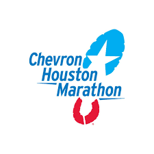
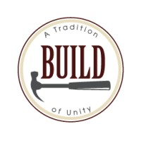

Service
-

Big event is an organization at Texas A&M that coordinates a large service event around March 25th of every year. You can check out their main website here: BigEvent.
-

The houston marathon is a race sponsored by the Chevron Oil company. I've worked here as a volunteer where I was in charge of keeping track of people's belongings. You can see more information here: Houston Marathon.
-

Build is an organization that helps create portable medical clinics. Students at Texas A&M have the opportunity to volunteer and help with the creation of these clinics. I have volunteered here multiple times and encourage others to do the same as well. You can find more information here: Build.